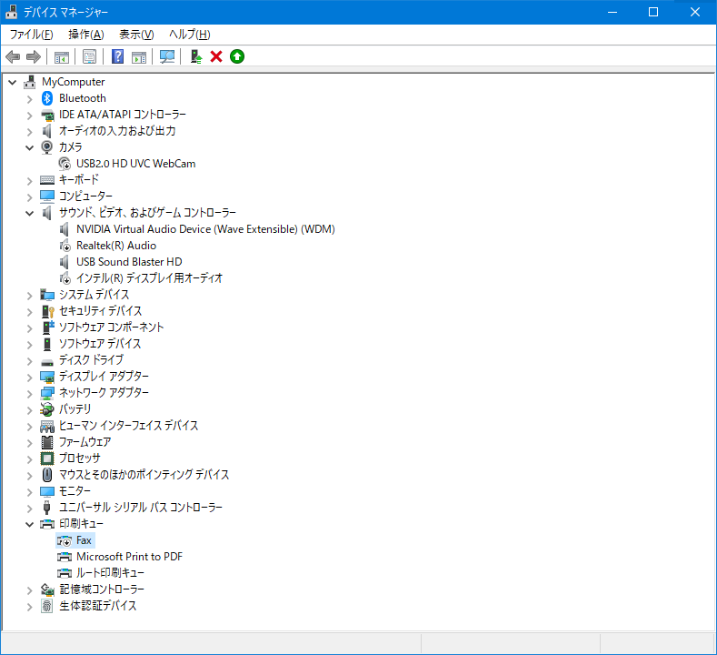

Windows10 もろもろ¶
設定¶
システム
通知とアクション
- アプリやその他の送信者からの通知を取得する：オンMultiGoAlarm で通知を使うようにしたのでオフからオンに変更 [2020-05-19]
Windowsを使うためのヒントやおすすめを取得：オフ
サウンド
ボリュームが不意に表示されるのを抑制。(少しマシになったかな程度で駄目っぽい)
サウンドコントロールパネル
再生デバイスのプロパティ
詳細タブ → オーディオ機能拡張を有効にする：オフ

デバイス
自動再生：オフ
マウス
速度：最速
ポインター→デザイン：なし
個人用設定
色
既定のアプリのモード：黒
以下の場所にアクセントカラーを表示します
スタート、タスクバー、アクションセンター: オン
タイトルバーとウィンドウの境界線: オン
スタート
「ときどきスタートにおすすめを表示する」→オフ
「スタートメニューまたはタスクバーのジャンプリストに最近開いた項目を表示する」→オフ
タスクバー→peopleの内容を全部オフ
簡単操作
ディスプレイ
透明：オフ
スクロールバーの自動非表示：オフ
デスクトップの会計画像：オフ
検索
セーフサーチ: オフ
クラウドコンテンツの検索: オフ
デバイスの履歴: オフ
プライバシー
全般：すべてオフ
診断＆フィードバック→フィードバックを求められる頻度：許可しない
バックグラウンドアプリ
- バックグラウンドで実行しないアプリをオフへ。 [2020-07-26]「アプリのバックグラウンド実行を許可する」はオフにしない方がいいらしい。
更新とセキュリティ
配信の最適化
他の PC からダウンロードを許可する：オフ
- Windows Defenderの検索除外で高速化Windows セキュリティ→ウイルスの驚異の防止→ウイルスと驚異の防止の設定→設定の管理→除外の追加または削除→除外の追加
C:\Program Files\Windows Defender\MsMpEng.exepath\to\migemogrep.exepath\to\peco.exepath\to\fenrir folderpath\to\PPx folderpath\to\freeplane folder%TEMP% の実フォルダtorrent downloading foldercrdownload
タスクバー
People：非表示
タスクビューボタン：非表示
コントロールパネル ControlPanel¶
プログラムと機能
Windows の機能の有効化または無効化
Microsoft XPS ドキュメントライター: 無効
Work olders Client: 無効
メディア機能: 無効
キーボード→表示までの待ち時間：短く
電源オプション
高パフォーマンス：オン
電源ボタンの動作を選択する
現在利用可能ではない設定を変更します
- 高速スタートアップを有効にする：オフSSD への負荷軽減
スリープ：オン
- 休止状態：オフSSD への負荷軽減
電源とスリープボタンおよびカバーの動作：すべて「スリープ状態」
システム
詳細設定
パフォーマンス
視覚効果：フォントのふちを滑らかにする以外を無効
詳細設定
- 仮想メモリ：800MB-800MBエラー時に詳細情報を取得できる最小値へ。
インデックスのオプション
スタートメニューのみ
Registry¶
「送る」メニューはカーソルを合わせるまで対象を読み込ませない
[HKEY_LOCAL_MACHINE\SOFTWARE\Microsoft\Windows\CurrentVersion\Explorer] "DelaySendToMenuBuild"=dword:00000001
コルタナの無効化:
Windows Registry Editor Version 5.00 [HKEY_LOCAL_MACHINE\SOFTWARE\Policies\Microsoft\Windows\Windows Search] "AllowCortana"=dword:00000000
Alt-Tab を速くする:
Windows Registry Editor Version 5.00 [HKEY_CURRENT_USER\SOFTWARE\Microsoft\Windows\CurrentVersion\Explorer] "AltTabSettings"=dword:00000001
ウィンドウ枠の幅を -60 から 0 へ変更:
Windows Registry Editor Version 5.00 [HKEY_CURRENT_USER\Control Panel\Desktop\WindowMetrics] "PaddedBorderWidth"="0"
- 起動したアプリにフォーカスを与える。フォーカスが当たらない場合があったため。::起動したアプリがアクティブにならない - Letters from lanternj <https://lanternj.hatenablog.com/entry/2019/03/03/090309>_::
[HKEY_CURRENT_USERControl PanelDesktop] "ForegroundLockTimeout"=dword:00000000
フォルダオプション¶
エクスプローラーの高速化 https://anond.hatelabo.jp/20191116220232
PCが開くまでに時間がかかる症状を改善
- よく使うファイルを非表示（個人用設定）デスクトップ右クリック → 個人用設定 → スタート → 「スタート画面またはタスクバーのジャンプリストに最近開いた項目を表示する」をオフ
- よく使うファイルを非表示（エクスプローラー）「コントロールパネル」 →「エクスプローラーのオプション」→「プライバシー」チェックを両方とも外す
フォルダで「表示」→「オプション」→表示
「隠しファイル、隠しフォルダー～」チェック
「フォルダーとデスクトップの項目の説明を～」オフ
「フォルダーのヒントに」オフ
「空のドライブは表示しない」オフ
「登録されている拡張子は表示しない」オフ
「同期プロバイダーの通知を表示する」オフ
- フォルダの表示設定を固定する※フォルダの種類が自動的に選別されるのが問題なので、全種類同じ設定にすることで固定する
フォルダ内の空白で右クリック→「このフォルダをカスタマイズ」
「フォルダーの種類」の項目を選択
フォルダ設定を全フォルダに適用する
ファイル→フォルダーと検索のオプションの変更
表示→「フォルダーに適用」
グループポリシー¶
ユーザーの構成 -> 管理用テンプレート -> Windows コンポーネント -> データの収集とプレビュー ビルド
利用統計情報の許可: 無効
Soft¶
管理者権限コマンドプロンプト
アクセス日時を保存しない:
fsutil behavior set disablelastaccess 1
Powershell
Set-ExecutionPolicy Unrestricted
OneDrive
サインインしたときに起動：オフ
MS-IME
設定
スペースは常に半角
IME 入力モードの切り替えの通知：オフ
キー設定 設定レジストリファイル
ATOK 設定
C-j: Enter コピー
C-n: 次候補
C-p: ↑からコピー
C-l: ↓からコピー
そのほか¶
デバイスマネージャー
- 不要なデバイスの無効化: 使わないデバイス。メイン以外のオーディオ関連、カメラ、FaxBluetooth は有効化。 [2021-01-05]
デスクトップのアイコンを非表示
デスクトップで右クリック→表示→アイコンを非表示
環境変数
PATH
path\to\msys64\usr\binpath\to\msys64\mingw64\binpath\to\ImageMagickpath\to\cmdpath\to\nodejspath\to\go\bin%USERPROFILE%\binpath\to\archive dll folderpath\to\SPI folerpath\to\npmpath\to\pandoc
GIT_SSH:
path\to\plink.exe with \\GOPATH:
path\to\go folderGOROOT:
%USERPROFILE%GRAPHVIZ_DOT:
path\to\dot.exe folder
エラー対応¶
レベル |
ソース |
ID |
内容 |
対処 |
|---|---|---|---|---|
エラー |
ESENT |
455 |
svchost ログ ファイル |
該当フォルダが存在しないので、管理者権限でコマンドプロンプトを起動してフォルダ作成。: mkdir C:\Windows\System32\config\systemprofile\AppData\Local\TileDataLayer\Database
|